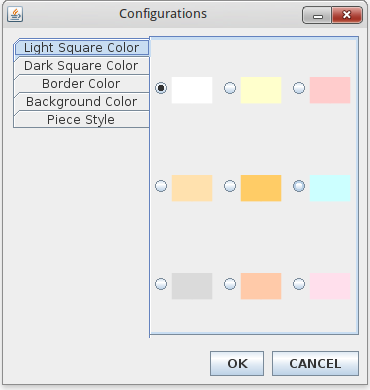

To configure your game, select Game → Configure . Following window dialog will be displayed:

You can configure light square color, dark square color, chessboard border color, show/hide chessboard coordinates, background color, and piece symbol. These options are defined in tabs at left, select a tab and choose desired value, then click OK buttom to apply selected configurations.